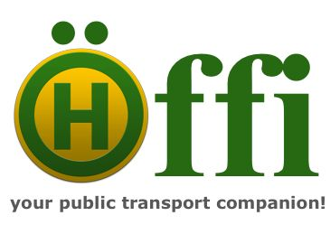

Öffi is an Android app that tells you where and when trains and busses go, including delays and replacement bus service for more and more transport authorities in Europe and beyond.
- Discover nearby stations
- Show departures
- Show directions from A to B
- View network plans
- App-Widget for departures of nearby station favorite
Coverage:
- Germany (long-distance, regional and local, e.g. Berlin, Hamburg, Munich, Cologne, Frankfurt, Stuttgart)
- Switzerland (long-distance, regional and local, e.g. Zürich, Geneva, Basel, Bern)
- Austria (long-distance, regional and local, e.g. Vienna, Graz, Linz, Salzburg, Innsbruck)
- Belgium (long-distance, regional and local, e.g. Antwerp, Ghent, Charleroi, Brussels)
- Luxembourg (long-distance, regional and local)
- Denmark (long-distance, regional and local, e.g. Copenhagen)
- Sweden (long-distance, regional and local, e.g. Stockholm)
- Norwegen (long-distance, regional and local, e.g. Oslo, Bergen)
- Poland (long-distance, regional and local, e.g. Warsaw)
- U.K. (long-distance, regional and local, e.g. London, Birmingham)
- Ireland (long-distance, regional and local, e.g. Dublin)
- Berlin & Brandenburg (local and regional)
- Frankfurt/Rhine-Main, Kassel & Hesse (local and regional)
- Munich (local and regional)
- North Rhine-Westphalia (Cologne, Dortmund, Düsseldorf, Münster, …) (local and regional)
- Lüdenscheid & Märkischer Kreis (local and regional)
- Paderborn & Höxter (local and regional)
- Mannheim, Rhine-Neckar & Rhein-Nahe (local and regional)
- Stuttgart (local and regional)
- Neckar-Alb-Donau (Reutlingen, Tübingen, …) (local and regional)
- Ulm (local and regional)
- Karlsruhe (local and regional)
- Trier (local and regional)
- Nuremberg, Fürth & Erlangen (local and regional)
- Würzburg & Regensburg (local and regional)
- Strasbourg & Freiburg (local and regional)
- Baden-Württemberg, Constance & Basel (local and regional)
- Kiel, Lübeck & Schleswig-Holstein (local and regional)
- Hannover & Lower Saxony (local and regional)
- Göttingen & South Lower Saxony (local and regional)
- Bremen (local and regional)
- Bremen, Bremerhaven & Oldenburg (local and regional)
- Schwerin & Mecklenburg-Vorpommern (local and regional)
- Rostock (local and regional)
- Leipzig, Halle & Saxony-Anhalt (local and regional)
- Plauen & Vogtland (local and regional)
- Vienna (local and regional)
- Linz (bus, tram and cablecar)
- Graz & Styria (local and regional)
- Tyrol (local and regional)
- Philadelphia (local and regional)
- Sydney (local and regional)
- Melbourne (local and regional)
- Dubai (local)
- Jerusalem (local)
- Provence-Alpes-Côte d'Azur (local and regional)
- Europe (mostly long-distance)
Integration with Android and common Apps:
- from Contacts: Query directions to your friends and family
- to Calendar: Save queried connections to your calendar and let Android remind you
- to Mail: Send queried connections to your friends
- to Google Maps: Locate stations on the city map
- to Google Street View: Virtual walk near a station
- to Google Navigation: Pedestrian navigation to stations or to your final destination
Requirements:
- Android 2.3-5.1
- Pre-installed Maps Library v1
- Internet connectivity